> [1] 9 3 9 3 7 8 4 7 8 3 4 5 9 5 3
> [16] 0 6 7 1 3 8 5 0 5 9 5 5 8 0 4
> [31] 4 5 4 6 8 8 8 10 7 3 10 4 4 6 8
> [46] 5 7 6 8 9 5 3 4 3 10 5 4 8 4 5
> [61] 7 9 1 10 4 5 7
Measures of central
tendency & variability
SOC 221 • Lecture 3
Victoria Sass
Wednesday, June 26, 2024
Today’s Topics
Measures of central tendency
- Calculation and properties
- Mean
- Median
- Mode
- How to choose
Measures of variability
- Range
- Interquartile range (IQR)
- Variance
- Standard deviation
Measures of central tendency
Overview of descriptive statistics / summary measures
- Purpose of descriptive statistics?
- Purpose of summary measures?
- Summarize a characteristic of a distribution using a single number/score
- Contrast to frequency distributions and graphs showing whole distribution
- Advantage: efficient
- Potential disadvantage: could obscure important information about the distribution
- Summarize a characteristic of a distribution using a single number/score
Measure of central tendency
single numbers used to convey
what is typical, common, usual, or
average in a distribution of scores
Measure of variability
single numbers used to convey the
diversity or heterogeneity in a
distribution of scores
Measures of central tendency
Purpose
- convey what is typical, common, usual, or average in a distribution of scores using a single number
Most common measures
- Mean
- Median
- Mode
Measure of central tendency: Mean
\[ \bar{X} = \frac{\Sigma X_i}{N} \]
Mean
The arithmetic average
of the scores in a
distribution equal to
the sum of all scores
divided by the
number of scores
in the distribution
X Bar refers to the mean of a variable called X
Sigma: summation sign meaning add up everything that follows
\(X_i\) refers to the individual values of the variable X
\(N\) = total number of cases
Example calculation
Mean of age for a group of 10 individuals
Ages of sample members: 21, 34, 19, 20, 25, 41, 21, 23, 20, 18
Calculating the mean
\[ \bar{X} = \frac{\Sigma X_i}{N} = \frac{X_1 + X_2 + X_3 + ... +X_n}{N} \]
\[ = \frac{(21 + 34 + 19 + 20 + 25 + 41 + 21 + 23 + 20 + 18)}{10} \]
\[ = \frac{242}{10} = 24.2 \text{ years} \]
Calculating the mean from a frequency distribution
Number of paper cups used per week by a sample of 67 college students
We could apply \(\bar{X} = \frac{\Sigma X_i}{N}\)
\[ = \frac{(9 + 3 + 9 + 7 + 8 + ... + 7)}{67} \]
…but this would be inefficient
Calculating the mean from a frequency distribution
| Number of cups (X) |
Frequency (f) |
Percent (%) |
||
|---|---|---|---|---|
| 0 | 3 | 4.48 | ||
| 1 | 2 | 2.99 | ||
| 2 | 0 | 0.00 | ||
| 3 | 8 | 11.94 | ||
| 4 | 11 | 16.42 | ||
| 5 | 12 | 17.91 | ||
| 6 | 4 | 5.97 | ||
| 7 | 7 | 10.45 | ||
| 8 | 10 | 14.93 | ||
| 9 | 6 | 8.96 | ||
| 10 | 4 | 5.97 | ||
| Total (N) | 67 | 100.00 |
\[ \bar{X} = \frac{\Sigma X_i}{N} \]
\[ \bar{X} = \frac{\Sigma fX}{N} \]
Calculating the mean from a frequency distribution
| Number of cups (X) |
Frequency (f) |
Percent (%) |
f(x) |
|
|---|---|---|---|---|
| 0 | 3 | 4.48 | 0 | |
| 1 | 2 | 2.99 | 2 | |
| 2 | 0 | 0.00 | 0 | |
| 3 | 8 | 11.94 | 24 | |
| 4 | 11 | 16.42 | 44 | |
| 5 | 12 | 17.91 | 60 | |
| 6 | 4 | 5.97 | 24 | |
| 7 | 7 | 10.45 | 49 | |
| 8 | 10 | 14.93 | 80 | |
| 9 | 6 | 8.96 | 54 | |
| 10 | 4 | 5.97 | 40 | |
| Total (N) | 67 | 100.00 | 377 |
\[ \bar{X} = \frac{\Sigma fX}{N} \]
= \(\frac{377}{67}\) = 5.63
Important properties of the mean
- Appropriate only for interval-ratio variables
- must be able to assume consistent units/values for mathematical operations
Important properties of the mean
- Appropriate only for interval-ratio variables
- must be able to assume consistent units/values for mathematical operations
- Mathematical balancing point of the distribution
- magnitude of scores below the mean balance the magnitude of scores above the mean
- Example: Annual salary of a sample of teachers ($1000’s)
Important properties of the mean
- Appropriate only for interval-ratio variables
- must be able to assume consistent units/values for mathematical operations
- Mathematical balancing point of the distribution
- magnitude of scores below the mean balance the magnitude of scores above the mean
- Example: Annual salary of a sample of teachers ($1000’s)
Note that the numbers of cases on each side of the mean don’t match but their relative magnitudes balance out (the mean remains the only balancing point)
The mean value does not always appear in the distribution
Mathematical implications of the balancing-point property
Deviation
(from the mean)
The difference
between an
individual
score/value
in the
distribution
and the mean of
the distribution
Mathematical implications of the balancing-point property
- The sum of the differences between the scores in a distribution and the mean of the distribution always equals zero.
\[ \Sigma(X_i -\bar{X}) = 0 \]
- The sum of the squared differences between the scores and the mean is smaller than the squared difference between the scores and any other point / value in the distribution.
- scores in any distribution are more clustered around the mean than around any other point
- in the absence of any other information, the mean is typically the best estimate of the score for any single case in the distribution
\[ \Sigma(X_i -\bar{X})^2 = minimum \]
Important properties of the mean
- Appropriate only for interval-ratio variables
- must be able to assume consistent units/values for mathematical operations
- Mathematical balancing point of the distribution
- magnitude of scores below the mean balance the magnitude of scores above the mean
- Example: Annual salary of a sample of teachers ($1000’s)
- Sensitive to extremes
Self-reported male heights (inches)
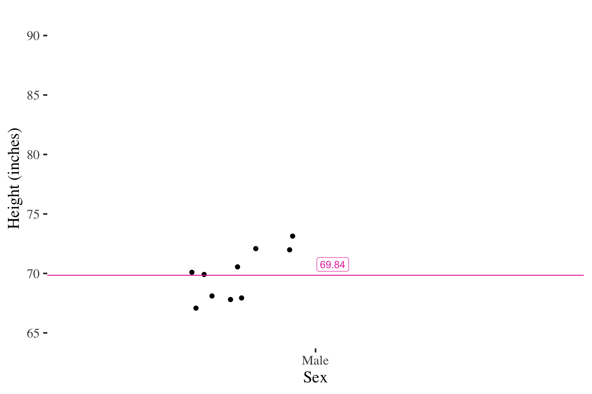Adding cases at the mean has no effect on the mean
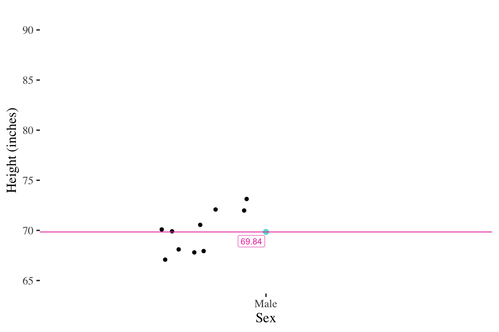Similarly, adding cases close to the mean has little effect on the mean
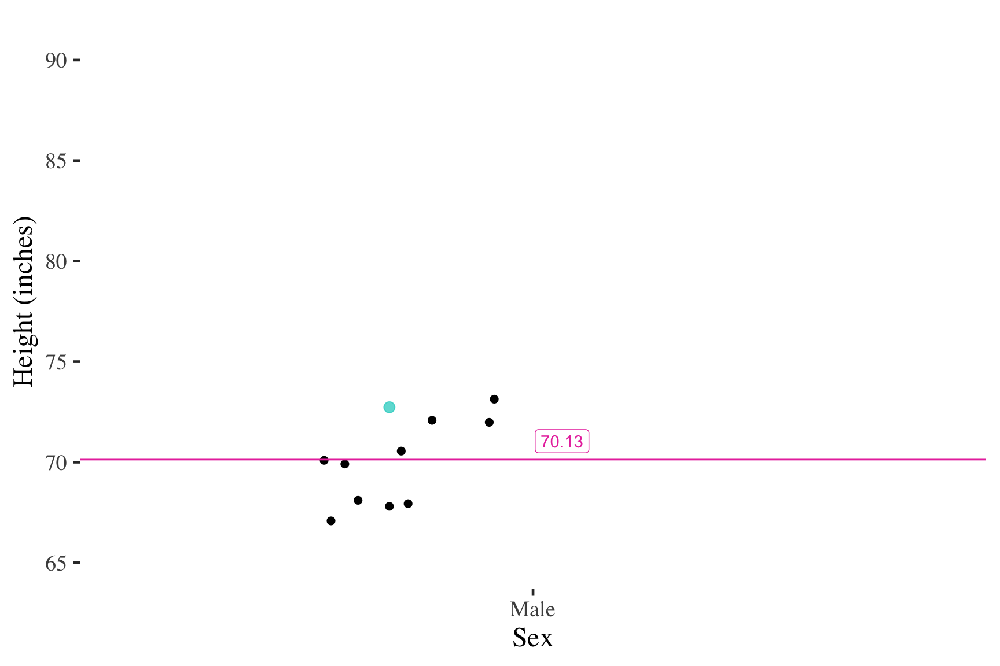But adding an extreme score changes the mean much more
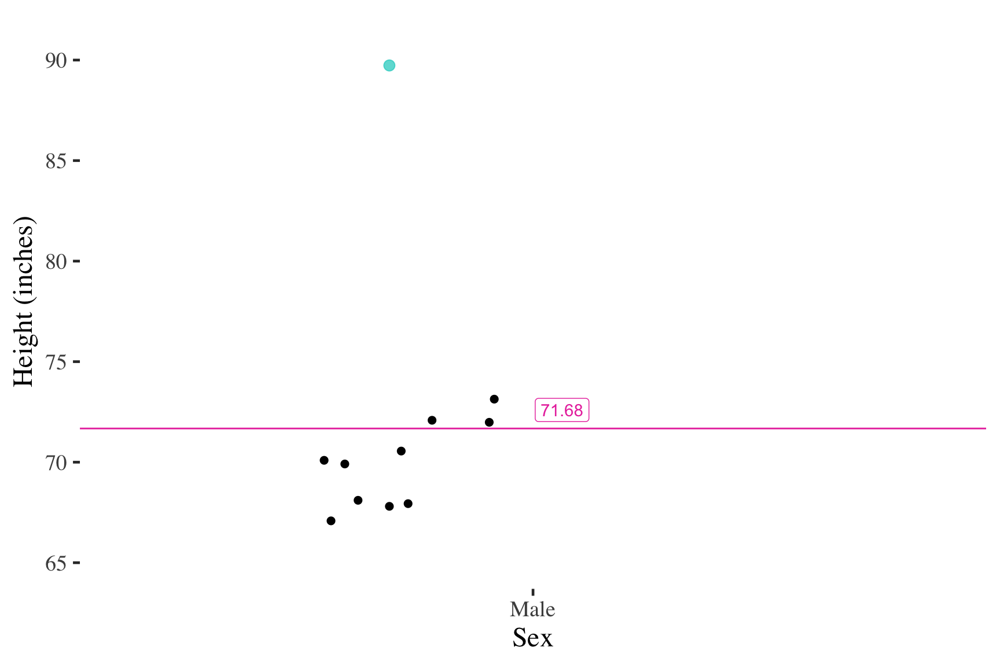Important properties of the mean
- Appropriate only for interval-ratio variables
- must be able to assume consistent units/values for mathematical operations
- Mathematical balancing point of the distribution
- magnitude of scores below the mean balance the magnitude of scores above the mean
- Example: Annual salary of a sample of teachers ($1000’s)
- Sensitive to extremes
- questionable measure of what is typical when the distribution contains extreme values (skewed distributions)
- but the mean retains usefulness in many statistical techniques, even when the distribution is skewed
Measure of central tendency: Median
Median
• The score for the case in the exact middle of the distribution
• The point in the distribution at which half of cases fall above
that score and half of the cases fall below that score
• 50th percentile of the distribution
Calculation
- Order cases by score (low-to-high or high-to-low)
- Find the median case (i.e., “median rank”)
- MEDIAN CASE = \(\frac{N + 1}{2}\)
- Identify the score associated with the median case.
Example calculation (with an odd number of cases)
Hours of TV watch for a group of inmates
4, 2, 7, 6, 0, 6, 1, 3, 5
Order the scores
0, 1, 2, 3, 4, 5, 6, 6, 7
Median case
\(\frac{N + 1}{2} = \frac{9 + 1}{2} =\) 5th case
Note that there are four cases with scores higher than the median and four with scores lower than the median
The median for this distribution is the score for the case in the fifth ordered position
Example calculation (with an even number of cases)
Hours of TV watch for a group of inmates
4, 2, 7, 6, 0, 6, 1, 3, 5, 0
Order the scores
0, 0, 1, 2, 3,|4, 5, 6, 6, 7
Median case
\(\frac{N + 1}{2} = \frac{10 + 1}{2} =\) 5.5th case
Note that there are five cases with scores higher than the median and five with scores lower than the median
Median = score for the point halfway
between the 5th and 6th case.
Score for 5th case = 3
Score for 6th case = 4
halfway between = \(\frac{3 + 4}{2} = 3.5\)
Calculating the median from a frequency distribution
| Number of cups (X) |
Frequency (f) |
Percent (%) |
Cf |
C% |
|---|---|---|---|---|
| 0 | 3 | 4.48 | 3 | 4.48 |
| 1 | 2 | 2.99 | 5 | 7.46 |
| 2 | 0 | 0.00 | 5 | 7.46 |
| 3 | 8 | 11.94 | 13 | 19.40 |
| 4 | 11 | 16.42 | 24 | 35.82 |
| 5 | 12 | 17.91 | 36 | 53.73 |
| 6 | 4 | 5.97 | 40 | 59.70 |
| 7 | 7 | 10.45 | 47 | 70.15 |
| 8 | 10 | 14.93 | 57 | 85.07 |
| 9 | 6 | 8.96 | 63 | 94.03 |
| 10 | 4 | 5.97 | 67 | 100.00 |
| Total (N) | 67 | 100.00 |
Option 1: Find the median case in the Cf column
Median at the \(\frac{67 + 1}{2}=\) 34th case.
Category 5 contains everything from the 25th to the 36th case.
Option 2: Find the 50th percentile in the C% column
Category 5 contains everything from the 35.83rd to the 53.73rd percentiles
Important properties of the median
- Appropriate for interval-ratio or ordinal variables must be able to order scores
Calculating the median for an ordinal variable
| Person number | How satisfied are you with your statistics course? |
|---|---|
| 1 | somewhat satisfied |
| 2 | very dissatisfied |
| 3 | somewhat satisfied |
| 4 | somewhat dissatisfied |
| 5 | somewhat dissatisfied |
| 6 | very dissatisfied |
| 7 | very satisfied |
| 8 | somewhat dissatisfied |
| 9 | somewhat satisfied |
| 10 | very dissatisfied |
| 11 | somewhat satisfied |
| 12 | somewhat dissatisfied |
Calculating the median for an ordinal variable
| Person number | How satisfied are you with your statistics course? |
|---|---|
| 2 | very dissatisfied |
| 6 | very dissatisfied |
| 10 | very dissatisfied |
| 4 | somewhat dissatisfied |
| 5 | somewhat dissatisfied |
| 8 | somewhat dissatisfied |
| 12 | somewhat dissatisfied |
| 1 | somewhat satisfied |
| 3 | somewhat satisfied |
| 9 | somewhat satisfied |
| 11 | somewhat satisfied |
| 7 | very satisfied |
Step 1: Put the cases in order by the score on the variable of interest
Calculating the median for an ordinal variable
| Person number | How satisfied are you with your statistics course? |
|---|---|
| 2 | very dissatisfied |
| 6 | very dissatisfied |
| 10 | very dissatisfied |
| 4 | somewhat dissatisfied |
| 5 | somewhat dissatisfied |
| 8 | somewhat dissatisfied |
| 12 | somewhat dissatisfied |
| 1 | somewhat satisfied |
| 3 | somewhat satisfied |
| 9 | somewhat satisfied |
| 11 | somewhat satisfied |
| 7 | very satisfied |
Step 1: Put the cases in order by the score on the variable of interest
Step 2: Find the median case:
\[
\frac{N + 1}{2}
\]
Median is the score associated with the median case
- Q: What do you do if the median case is between two different ordinal values?
- A: Describe the median as between the categories
Important properties of the median
- Appropriate for interval-ratio or ordinal variables must be able to order scores
- In comparison to the mean, the median is less affected by extreme scores
- but not completely unaffected
- number of scores, not their magnitude, at different parts of the distribution is what matters…
Self-reported male heights (inches)
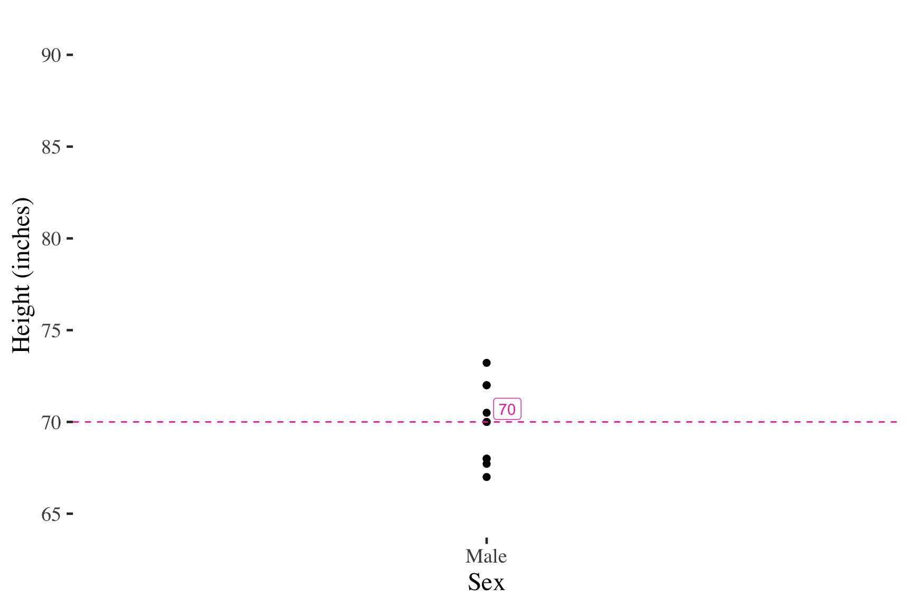Tripling the top score has no effect on the median
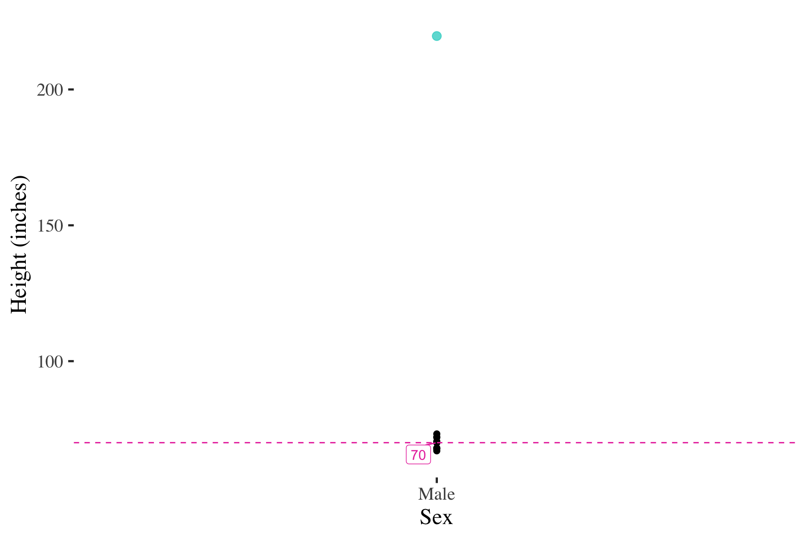However, adding multiple cases will affect the median
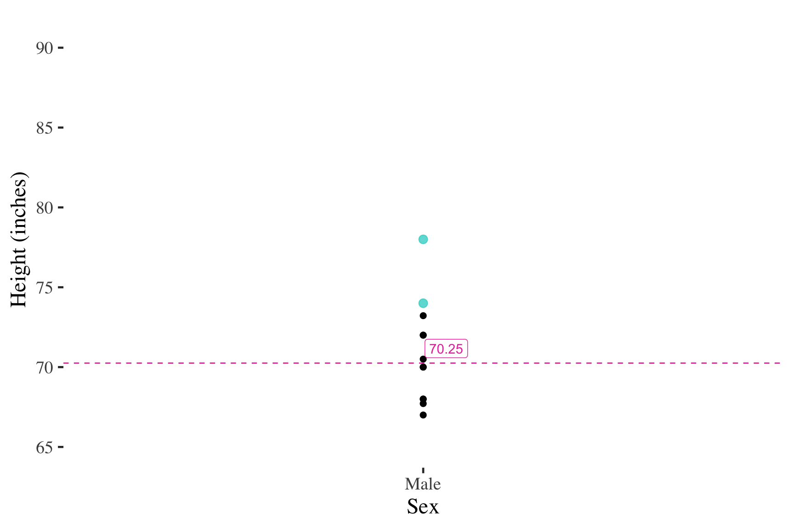Measure of central tendency: Mode
Mode
The most frequently occurring score in the distribution
- most in line with the most typical meaning of central tendency
- Single score most likely to occur = most likely to be selected at random
- but may be far from some (or many) cases
Example calculation
Ages of group members
21, 34, 19, 20, 25, 41, 21, 23, 21, 18
Example calculation
Ages of group members
21, 34, 19, 20, 25, 41, 21, 23, 21, 18
Mode is 21
Example calculation
| Person number | How satisfied are you with your statistics course? |
|---|---|
| 1 | somewhat satisfied |
| 2 | very dissatisfied |
| 3 | somewhat satisfied |
| 4 | somewhat dissatisfied |
| 5 | somewhat dissatisfied |
| 6 | very dissatisfied |
| 7 | very satisfied |
| 8 | somewhat dissatisfied |
| 9 | somewhat satisfied |
| 10 | very dissatisfied |
| 11 | somewhat satisfied |
| 12 | somewhat dissatisfied |
Example calculation
| Person number | How satisfied are you with your statistics course? |
|---|---|
| 1 | somewhat satisfied |
| 2 | very dissatisfied |
| 3 | somewhat satisfied |
| 4 | somewhat dissatisfied |
| 5 | somewhat dissatisfied |
| 6 | very dissatisfied |
| 7 | very satisfied |
| 8 | somewhat dissatisfied |
| 9 | somewhat satisfied |
| 10 | very dissatisfied |
| 11 | somewhat satisfied |
| 12 | somewhat dissatisfied |
- Two different values are tied for the most frequent
- Two modes: somewhat satisfied AND somewhat dissatisfied
Example calculation: What is the mode?
| Race | f |
|---|---|
| African American/Black | 16 |
| Asian/Pacific Islander | 7 |
| Native American | 3 |
| White | 22 |
| Other | 2 |
| Total (N) | 50 |
Important properties of the mode
- Appropriate for any level of measurement
- A distribution may have multiple modes
- bimodal, trimodal, etc.
- mode less useful in these situations (no longer a single number to convey what is typical)
Choosing a measure of central tendency
3 criteria:
- Level of measurement
- Limits options for central tendency
- Interval variable: mode, median, or mean
- Ordinal variable: mode or median
- Nominal variable: mode
- Limits options for central tendency
- Amount of information incorporated into the measure
- Mean uses most information, median the second most
- Shape of the distribution
- Mean can give misleading picture of what is common or typical in a skewed distribution
- But the mean is so commonly understood that, with a skewed distribution, we often use BOTH the median and mean
Practice
Choose the “best” measure of central tendency for the following
- Measure of job satisfaction using a Likert scale
- very satisfied, somewhat satisfied, neutral, somewhat dissatisfied, very dissatisfied
- Measure of the race/ethnicity of individual survey respondents
- African American/black, Asian/PI, Native American, White/EA, other
- Two measures of ethnic composition of neighborhoods
- Latino concentration: low (<15%), medium (15 to 40%), high (>40%)
- Percent Latino: (Latino Population/Total Population)*100
- Measure of number of dollars donated to charity
- Measure of number of dollars donated to charity with central tendency scores:
- Mode = $0
- Median = $150
- Mean = $1,200
Practice
Choose the “best” measure of central tendency for the following
- Measure of job satisfaction using a Likert scale
- very satisfied, somewhat satisfied, neutral, somewhat dissatisfied, very dissatisfied
Criteria
- Ordinal level of measurement so could use mode or median
- Median uses more information than the mode
- Shape of the distribution not relevant since median not greatly affected
Decision: MEDIAN
Practice
Choose the “best” measure of central tendency for the following
- Measure of the race/ethnicity of individual survey respondents
- African American/black, Asian/PI, Native American, White/EA, other
Criteria
- Nominal level of measurement so can only use mode
Decision: MODE
Practice
Choose the “best” measure of central tendency for the following
- Two measures of ethnic composition of neighborhoods
- Latino concentration: low (<15%), medium (15 to 40%), high (>40%)
- Percent Latino: (Latino Population/Total Population)*100
Criteria
- Ordinal level of measurement so could use mode or median
- Median uses more information
- Shape of the distribution not relevant since median not greatly affected
Decision: MEDIAN
Practice
Choose the “best” measure of central tendency for the following
- Two measures of ethnic composition of neighborhoods
- Latino concentration: low (<15%), medium (15 to 40%), high (>40%)
- Percent Latino: (Latino Population/Total Population)*100
Criteria
- Interval level of measurement so could use mode, median, or mean
- Mean uses more information than either median or mode
- No evidence of a skewed shape, so stick with mean
Decision: MEAN
Practice
Choose the “best” measure of central tendency for the following
- Measure of number of dollars donated to charity
Criteria
- Interval level of measurement so could use mode, median, or mean
- Mean uses more information than either median or mode
- No evidence of a skewed shape, so stick with mean
Decision: MEAN
Practice
Choose the “best” measure of central tendency for the following
- Measure of number of dollars donated to charity with central tendency scores:
- Mode = $0
- Median = $150
- Mean = $1,200
Criteria
- Interval level of measurement so could use mode, median, or mean
- Mean uses more information than either median or mode
- Shape of the distribution is clearly skewed (based on relative values of the measures) so mean may be misleading picture of what is typical
Decision: MEDIAN (plus mean?)
Break!
Measures of variability
Overview of variability
- Synonyms: diversity, heterogeneity, dispersion
- Common measures
- Range
- Interquartile range (IQR)
- Variance and Standard Deviation
- Most measures of variability appropriate for interval-level variables only
- Range can be used for ordinal variables
- For nominal variables, describe diversity by examining frequencies in each category
Measure of variability
single numbers used
to convey the
diversity or
heterogeneity
in a distribution
of scores.
Range
- Difference between the highest and lowest value appearing in the distribution
\[ Range = X_{max} - X_{min} \]

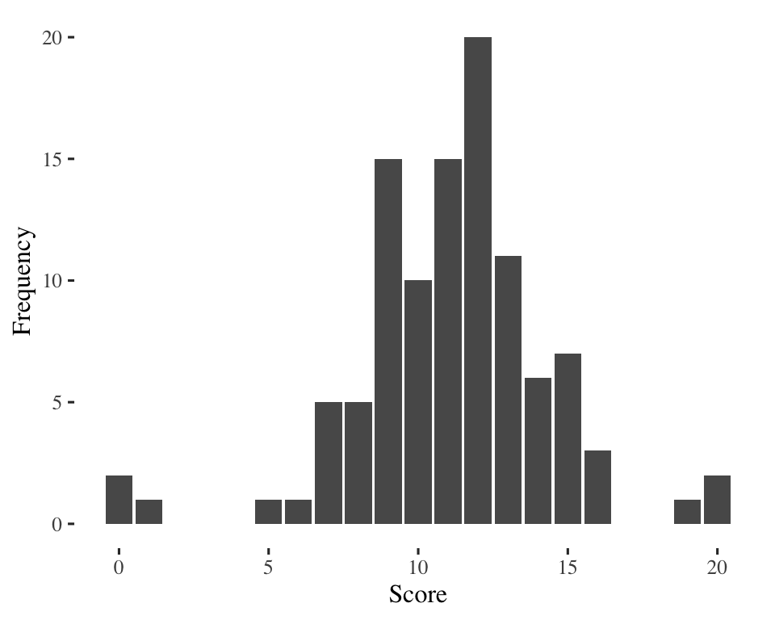
\(20 - 0 = 20\)
\(20 - 0 = 20\)
Same range, but are the two distributions equally diverse?
Problem with the range: ignores lots of information so can be a misleading measure of diversity.
Interquartile Range (IQR)
- Difference between the 75th and 25th percentiles in the distribution
\[ IQR = X_{75th} - X_{25th} \]
- First quartile: 25th percentile
- 25% of the observations are smaller than the 1st quartile, 75% are larger
- Second quartile: 50th percentile, the median
- 50% of the observations are smaller, 50% larger
- Third quartile: 75th percentile
- 75% of the observations are smaller than the 3rd quartile, 25% are larger
Quartiles
Sections of the
distribution in which
¼ of the observations/
cases are located
How to calculate the quartiles
- Arrange the observations in increasing order and locate the median, M.
- The first quartile Q1 is the median (midpoint) of the observations located to the left of the median in the ordered list.
- The third quartile Q3 is the median (midpoint) of the observations located to the right of the median in the ordered list.
IQR example 1
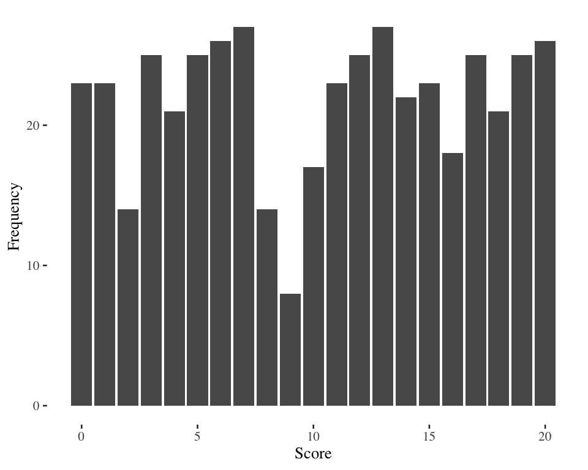IQR example 1 (15.75 - 5 = 10)
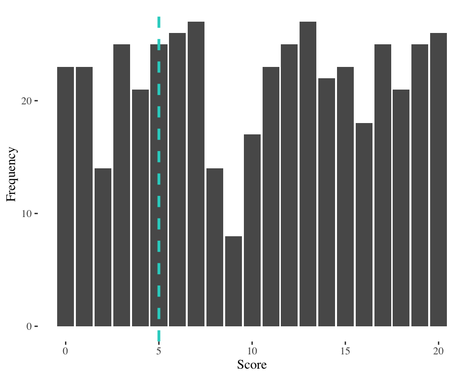Score at 25th percentile = 5
IQR example 1 (15.75 - 5 = 10)
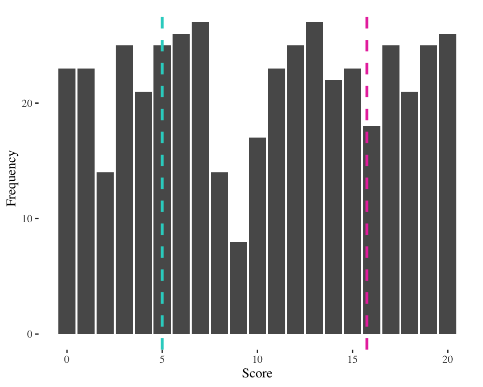Score at 25th percentile = 5
Score at 75th percentile = 15.75
IQR example 2

IQR example 2 (13 - 9 = 4)
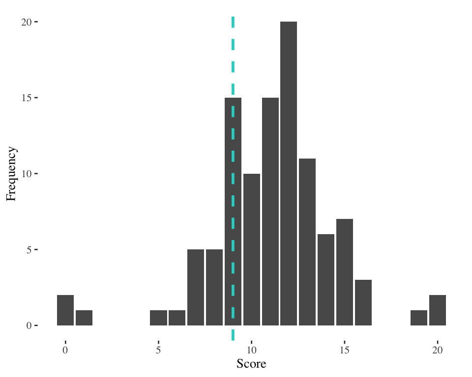Score at 25th percentile = 5
IQR example 2 (13 - 9 = 4)
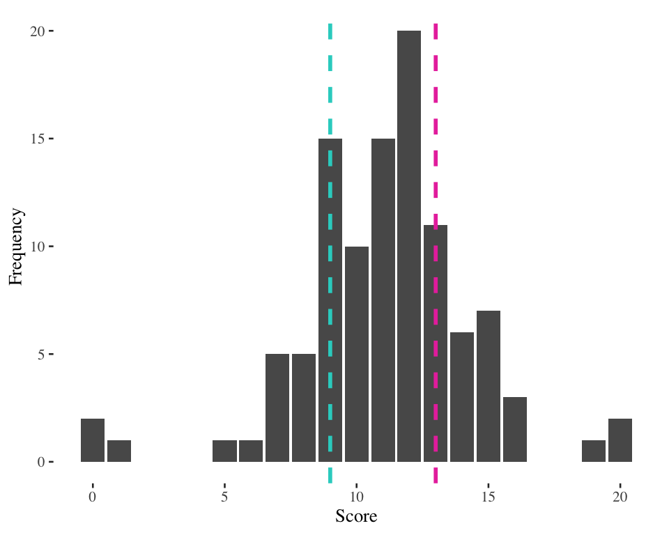Score at 25th percentile = 9
Score at 75th percentile = 13
What’s the use of the IQR?
- In what situations would the IQR be helpful?
- What kinds of problems does it solve?
- How much information does the IQR really consider?
Outliers
An extremely
high value
or extremely
low value
in a distribution
(that may skew
the results of our
statistical analysis)
- Measure of spread: Are the individuals in our data set very different on this variable or not?
- Useful for finding possible outliers
- Rule of thumb for identifying outliers = call an observation an outlier if it falls more than 1.5 × IQR above the third quartile or below the first quartile
Practice
Calculate the IQR and identify any outliers in the age at first birth data for a sample of women in rural India.
Age at 1st birth:
13, 17, 17, 18, 20, 22, 22, 24, 24, 27
Practice
Calculate the IQR and identify any outliers in the age at first birth data for a sample of women in rural India.
Age at 1st birth:
13, 17, 17, 18, 20, 22, 22, 24, 24, 27
Are the values of 13 or 27 outliers in this distribution?
Call an observation an outlier if it falls more than 1.5 × IQR above the third quartile or below the first quartile
Practice
Calculate the IQR and identify any outliers in the age at first birth data for a sample of women in rural India.
Age at 1st birth:
13, 17, 17, 18, 20, 22, 22, 24, 24, 27
Start by finding the median:
Median case = \[
\frac{N + 1}{2} = \frac{10 + 1}{5} = 5.5
\]
Median = value halfway between
values for the 5th and 6th cases
\(M = 21\)
Practice
Calculate the IQR and identify any outliers in the age at first birth data for a sample of women in rural India.
Age at 1st birth:
13, 17, 17, 18, 20, 22, 22, 24, 24, 27
\(M = 21\)
Find the first quartile (\(X_{25th}\))
and third quartile (\(X_{75th}\))
Find the Interquartile Range =
\(X_{75th}\) - \(X_{25th}\) = 24 – 17 = 7
Multiply the Interquartile Range by 1.5 to get outlier-defining distance: (7)(1.5) = 10.5
Practice
Calculate the IQR and identify any outliers in the age at first birth data for a sample of women in rural India.
Age at 1st birth:
13, 17, 17, 18, 20, 22, 22, 24, 24, 27
\(M = 21\)
Find the first quartile (\(X_{25th}\))
and third quartile (\(X_{75th}\))
Find the Interquartile Range =
\(X_{75th}\) - \(X_{25th}\) = 24 – 17 = 7
Multiply the Interquartile Range by 1.5 to get outlier-defining distance: (7)(1.5) = 10.5
\(X_{25th} = 17\)
\(X_{25th} =\) midpoint of
the lower half
\(X_{75th} = 24\)
\(X_{75th} =\) midpoint of
the upper half
Practice
Calculate the IQR and identify any outliers in the age at first birth data for a sample of women in rural India.
Age at 1st birth:
13, 17, 17, 18, 20, 22, 22, 24, 24, 27
Values of 13 and 27 are NOT
outliers in this distribution
Find outlier thresholds:
values 10.5 units below \(X_{25th}\)
and 10.5 units above \(X_{75th}\)
\(X_{25th}\) - 10.5 = 17 - 10.5 = 6.5
\(X_{75th}\) + 10.5 = 24 + 10.5 = 34.5
First births at age 6.5 or younger
and 34.5 or older would
be considered outliers
\(X_{25th} = 17\)
\(X_{25th} =\) midpoint of
the lower half
\(X_{75th} = 24\)
\(X_{75th} =\) midpoint of
the upper half
Variance
- Closely related measures of variability for interval-level variables
- Takes into consideration all scores in the distribution
- Indicates the spread of cases from the mean
Variance
A measure of variability for interval level variables equal to the
average of the squared deviations from the mean
Standard deviation
A measure of variability for interval level variables equal to the
square root of the variance
Variance and standard deviation equations
- Variance: A measure of variability for interval level variables equal to the average of the squared deviations from the mean
\[ s_x^2 = \frac{\Sigma(X_i - \bar{X})^2}{n - 1} \]
- Standard deviation: A measure of variability for interval level variables equal to the square root of the variance
\[ s_x = \sqrt{\frac{\Sigma(X_i - \bar{X})^2}{n - 1}} \]
Variance for a variable called \(X\)
Sum of squared deviations from the mean for each score
Standard deviation for a variable called \(X\)
Funkiness alert: Some texts show the denominator as \(n\). Here we are presuming that we will ultimately calculate \(s_x\) in the context of inference.
Calculating the variance & standard deviation
Six steps
- Calculate the mean of the distribution
- Subtract the mean from each score to get the deviation
- Square each deviation
- Sum the squared deviations
- Divide the sum by n-1 to get the variance
- Take the square root of the variance to get the standard deviation
Example: Quiz scores for 8 students:
43, 50, 75, 77, 80, 82, 85, 92
STEP 1
Calculate the mean of the distribution
| Student | Quiz Score (X) | \(X - \bar{X}\) | \((X - \bar{X})^2\) |
|---|---|---|---|
| a | 43 | ||
| b | 50 | ||
| c | 75 | ||
| d | 77 | ||
| e | 80 | ||
| f | 82 | ||
| g | 85 | ||
| h | 92 | ||
| SUM | 584 | ||
| MEAN | 73 |
STEP 1
Calculate the mean of the distribution
| Student | Quiz Score (X) | \(X - \bar{X}\) | \((X - \bar{X})^2\) |
|---|---|---|---|
| a | 43 | ||
| b | 50 | ||
| c | 75 | ||
| d | 77 | ||
| e | 80 | ||
| f | 82 | ||
| g | 85 | ||
| h | 92 | ||
| SUM | 584 | ||
| MEAN | 73 |
\[ \bar{X} = \frac{\Sigma X_i}{n} = \frac{584}{8} = 73 \]
STEP 2
Subtract the mean from each score to get the deviation (\(X_i - \bar{X}\))
| Student | Quiz Score (X) | \(X - \bar{X}\) | \((X - \bar{X})^2\) |
|---|---|---|---|
| a | 43 | -30 | |
| b | 50 | -23 | |
| c | 75 | 2 | |
| d | 77 | 4 | |
| e | 80 | 7 | |
| f | 82 | 9 | |
| g | 85 | 12 | |
| h | 92 | 19 | |
| SUM | 584 | 0 | |
| MEAN | 73 |
Student a:
\(Deviation = 43 - 73 = -30\)
Student a’s score on the quiz is 30 points below the average
STEP 2
Subtract the mean from each score to get the deviation (\(X_i - \bar{X}\))
| Student | Quiz Score (X) | \(X - \bar{X}\) | \((X - \bar{X})^2\) |
|---|---|---|---|
| a | 43 | -30 | |
| b | 50 | -23 | |
| c | 75 | 2 | |
| d | 77 | 4 | |
| e | 80 | 7 | |
| f | 82 | 9 | |
| g | 85 | 12 | |
| h | 92 | 19 | |
| SUM | 584 | 0 | |
| MEAN | 73 |
Student a:
\(Deviation = 43 - 73 = -30\)
Student a’s score on the quiz is 30 points below the average
Why is the sum 0?
STEP 3
Square all of the deviations from the mean
| Student | Quiz Score (X) | \(X - \bar{X}\) | \((X - \bar{X})^2\) |
|---|---|---|---|
| a | 43 | -30 | 900 |
| b | 50 | -23 | 529 |
| c | 75 | 2 | 4 |
| d | 77 | 4 | 16 |
| e | 80 | 7 | 49 |
| f | 82 | 9 | 81 |
| g | 85 | 12 | 144 |
| h | 92 | 19 | 361 |
| SUM | 584 | 0 | |
| MEAN | 73 |
Squaring the deviations is just a way to make sure that positive and negative deviations don’t cancel each other out
STEP 4
Sum all of the squared deviations
| Student | Quiz Score (X) | \(X - \bar{X}\) | \((X - \bar{X})^2\) |
|---|---|---|---|
| a | 43 | -30 | 900 |
| b | 50 | -23 | 529 |
| c | 75 | 2 | 4 |
| d | 77 | 4 | 16 |
| e | 80 | 7 | 49 |
| f | 82 | 9 | 81 |
| g | 85 | 12 | 144 |
| h | 92 | 19 | 361 |
| SUM | 584 | 0 | 2084 |
| MEAN | 73 |
STEP 5
Divide the sum by \(n-1\) to get the variance
| Student | Quiz Score (X) | \(X - \bar{X}\) | \((X - \bar{X})^2\) |
|---|---|---|---|
| a | 43 | -30 | 900 |
| b | 50 | -23 | 529 |
| c | 75 | 2 | 4 |
| d | 77 | 4 | 16 |
| e | 80 | 7 | 49 |
| f | 82 | 9 | 81 |
| g | 85 | 12 | 144 |
| h | 92 | 19 | 361 |
| SUM | 584 | 0 | 2084 |
| MEAN | 73 |
\[ s_x^2 = \frac{\Sigma(X_i - \bar{X})^2}{n - 1} = \frac{2084}{7} = 297.71 \]
STEP 6
Take the square root of the variance to get the standard deviation
| Student | Quiz Score (X) | \(X - \bar{X}\) | \((X - \bar{X})^2\) |
|---|---|---|---|
| a | 43 | -30 | 900 |
| b | 50 | -23 | 529 |
| c | 75 | 2 | 4 |
| d | 77 | 4 | 16 |
| e | 80 | 7 | 49 |
| f | 82 | 9 | 81 |
| g | 85 | 12 | 144 |
| h | 92 | 19 | 361 |
| SUM | 584 | 0 | 2084 |
| MEAN | 73 |
\[ s_x = \sqrt{\frac{\Sigma(X_i - \bar{X})^2}{n - 1}} \] \[ = \sqrt{297.71} \] \[ = 17.25 \]
Interpreting the standard deviation
- ROUGHLY equal to the average deviation of scores in the distribution from the mean of the distribution
- squaring and square-rooting leads to some slippage
- Minimum value = 0 = no variation in scores
- Useful for comparing the level of diversity or heterogeneity of two or more different distributions
- Example: Quiz scores from 3 classes:
- Class 1: Mean = 75, standard deviation = 5
- Class 2: Mean = 75, standard deviation = 15
- Class 3: Mean = 75, standard deviation = 0
- Example: Quiz scores from 3 classes:
- Important as the unit of measurement to determine how unusual or extreme a particular score is
- Question: In which class is a score of 90 most unusual?
- Question: In which class is a score of 90 more typical?
- Useful in combination with the normal curve
Comparing data
Statistics from two populations of women show the following information about the number of children born:
| Coldlandia | Tropicana | |
|---|---|---|
| Mean | 3.15 | 4.05 |
| Median | 2.50 | 4.00 |
| Mode | 2.00 | 4.00 |
| Range | 18.00 | 12.00 |
| \(S_x\) | 4.75 | 2.85 |
- According to these statistics, which of the populations has greater levels of childbearing? (interpret the key statistics)
- Which one has greater diversity in childbearing experiences? (interpret the key statistics)
- What can you tell about the shape of the distributions?
Calculating the standard deviation from a frequency distribution
Step 1: Calculate the mean
| Number of cups (X) |
f |
||||
|---|---|---|---|---|---|
| 0 | 3 | ||||
| 1 | 2 | ||||
| 2 | 0 | ||||
| 3 | 8 | ||||
| 4 | 11 | ||||
| 5 | 12 | ||||
| 6 | 4 | ||||
| 7 | 7 | ||||
| 8 | 10 | ||||
| 9 | 6 | ||||
| 10 | 4 | ||||
| Total (n) | 67 |
\[ s_x = \sqrt{\frac{\Sigma(X_i - \bar{X})^2}{n - 1}} \]
Calculating the standard deviation from a frequency distribution
Step 1: Calculate the mean
| Number of cups (X) |
f |
f(x) |
|||
|---|---|---|---|---|---|
| 0 | 3 | 0 | |||
| 1 | 2 | 2 | |||
| 2 | 0 | 0 | |||
| 3 | 8 | 24 | |||
| 4 | 11 | 44 | |||
| 5 | 12 | 60 | |||
| 6 | 4 | 24 | |||
| 7 | 7 | 49 | |||
| 8 | 10 | 80 | |||
| 9 | 6 | 54 | |||
| 10 | 4 | 40 | |||
| Total (n) | 67 | 377 |
\[ s_x = \sqrt{\frac{\Sigma(X_i - \bar{X})^2}{n - 1}} \]
\[ \bar{X} = \frac{\Sigma f X}{n} \] \[ = \frac{377}{67} \] \[ = 5.63 \]
Multiplying each value of X by the number of times it appears
Calculating the standard deviation from a frequency distribution
Step 2: Get the deviation of each score from the mean
| Number of cups (X) |
f |
f(x) |
\(X_i - \bar{X}\) |
||
|---|---|---|---|---|---|
| 0 | 3 | 0 | -5.63 | ||
| 1 | 2 | 2 | -4.63 | ||
| 2 | 0 | 0 | -3.63 | ||
| 3 | 8 | 24 | -2.63 | ||
| 4 | 11 | 44 | -1.63 | ||
| 5 | 12 | 60 | -0.63 | ||
| 6 | 4 | 24 | 0.37 | ||
| 7 | 7 | 49 | 1.37 | ||
| 8 | 10 | 80 | 2.37 | ||
| 9 | 6 | 54 | 3.37 | ||
| 10 | 4 | 40 | 4.37 | ||
| Total (n) | 67 | 377 |
\[ s_x = \sqrt{\frac{\Sigma(X_i - \bar{X})^2}{n - 1}} \]
Calculating the standard deviation from a frequency distribution
Step 3: Square all of the deviations from the mean
| Number of cups (X) |
f |
f(x) |
\(X_i - \bar{X}\) |
\((X_i -\bar{X})^2\) |
|
|---|---|---|---|---|---|
| 0 | 3 | 0 | -5.63 | 31.666 | |
| 1 | 2 | 2 | -4.63 | 21.41 | |
| 2 | 0 | 0 | -3.63 | 13.15 | |
| 3 | 8 | 24 | -2.63 | 6.90 | |
| 4 | 11 | 44 | -1.63 | 2.65 | |
| 5 | 12 | 60 | -0.63 | 0.39 | |
| 6 | 4 | 24 | 0.37 | 0.14 | |
| 7 | 7 | 49 | 1.37 | 1.89 | |
| 8 | 10 | 80 | 2.37 | 5.63 | |
| 9 | 6 | 54 | 3.37 | 11.38 | |
| 10 | 4 | 40 | 4.37 | 19.12 | |
| Total (n) | 67 | 377 |
\[ s_x = \sqrt{\frac{\Sigma(X_i - \bar{X})^2}{n - 1}} \]
Calculating the standard deviation from a frequency distribution
Step 4: Sum all of the squared deviations (\(\Sigma(X_i - \bar{X})^2\))
| Number of cups (X) |
f |
f(x) |
\(X_i - \bar{X}\) |
\((X_i -\bar{X})^2\) |
|
|---|---|---|---|---|---|
| 0 | 3 | 0 | -5.63 | 31.666 | |
| 1 | 2 | 2 | -4.63 | 21.41 | |
| 2 | 0 | 0 | -3.63 | 13.15 | |
| 3 | 8 | 24 | -2.63 | 6.90 | |
| 4 | 11 | 44 | -1.63 | 2.65 | |
| 5 | 12 | 60 | -0.63 | 0.39 | |
| 6 | 4 | 24 | 0.37 | 0.14 | |
| 7 | 7 | 49 | 1.37 | 1.89 | |
| 8 | 10 | 80 | 2.37 | 5.63 | |
| 9 | 6 | 54 | 3.37 | 11.38 | |
| 10 | 4 | 40 | 4.37 | 19.12 | |
| Total (n) | 67 | 377 |
\[ s_x = \sqrt{\frac{\Sigma(X_i - \bar{X})^2}{n - 1}} \]
Calculating the standard deviation from a frequency distribution
Step 4: Sum all of the squared deviations (\(\Sigma(X_i - \bar{X})^2\))
| Number of cups (X) |
f |
f(x) |
\(X_i - \bar{X}\) |
\((X_i -\bar{X})^2\) |
\(f(X_i - \bar{X})^2\) |
|---|---|---|---|---|---|
| 0 | 3 | 0 | -5.63 | 31.666 | 94.98 |
| 1 | 2 | 2 | -4.63 | 21.41 | 42.82 |
| 2 | 0 | 0 | -3.63 | 13.15 | 0.00 |
| 3 | 8 | 24 | -2.63 | 6.90 | 55.20 |
| 4 | 11 | 44 | -1.63 | 2.65 | 29.11 |
| 5 | 12 | 60 | -0.63 | 0.39 | 4.72 |
| 6 | 4 | 24 | 0.37 | 0.14 | 0.56 |
| 7 | 7 | 49 | 1.37 | 1.89 | 13.20 |
| 8 | 10 | 80 | 2.37 | 5.63 | 56.32 |
| 9 | 6 | 54 | 3.37 | 11.38 | 68.27 |
| 10 | 4 | 40 | 4.37 | 19.12 | 76.50 |
| Total (n) | 67 | 377 | 441.67 |
\[ s_x = \sqrt{\frac{\Sigma f (X_i - \bar{X})^2}{n - 1}} \]
But we must take into consideration the number of times (frequency) each squared deviation appears
\[ \Sigma f (X_i - \bar{X})^2 \]
Calculating the standard deviation from a frequency distribution
Step 5: Divide by \(n - 1\) to get the variance
| Number of cups (X) |
f |
f(x) |
\(X_i - \bar{X}\) |
\((X_i -\bar{X})^2\) |
\(f(X_i - \bar{X})^2\) |
|---|---|---|---|---|---|
| 0 | 3 | 0 | -5.63 | 31.666 | 94.98 |
| 1 | 2 | 2 | -4.63 | 21.41 | 42.82 |
| 2 | 0 | 0 | -3.63 | 13.15 | 0.00 |
| 3 | 8 | 24 | -2.63 | 6.90 | 55.20 |
| 4 | 11 | 44 | -1.63 | 2.65 | 29.11 |
| 5 | 12 | 60 | -0.63 | 0.39 | 4.72 |
| 6 | 4 | 24 | 0.37 | 0.14 | 0.56 |
| 7 | 7 | 49 | 1.37 | 1.89 | 13.20 |
| 8 | 10 | 80 | 2.37 | 5.63 | 56.32 |
| 9 | 6 | 54 | 3.37 | 11.38 | 68.27 |
| 10 | 4 | 40 | 4.37 | 19.12 | 76.50 |
| Total (n) | 67 | 377 | 441.67 |
\[ s_x = \sqrt{\frac{\Sigma f (X_i - \bar{X})^2}{n - 1}} \]
\[ s_x^2 = \frac{\Sigma f (X_i - \bar{X})^2}{n - 1} \] \[ = \frac{441.67}{67 - 1} \] \[ = 6.69 \]
Calculating the standard deviation from a frequency distribution
Step 6: Take the square root of the variance to get the standard deviation
| Number of cups (X) |
f |
f(x) |
\(X_i - \bar{X}\) |
\((X_i -\bar{X})^2\) |
\(f(X_i - \bar{X})^2\) |
|---|---|---|---|---|---|
| 0 | 3 | 0 | -5.63 | 31.666 | 94.98 |
| 1 | 2 | 2 | -4.63 | 21.41 | 42.82 |
| 2 | 0 | 0 | -3.63 | 13.15 | 0.00 |
| 3 | 8 | 24 | -2.63 | 6.90 | 55.20 |
| 4 | 11 | 44 | -1.63 | 2.65 | 29.11 |
| 5 | 12 | 60 | -0.63 | 0.39 | 4.72 |
| 6 | 4 | 24 | 0.37 | 0.14 | 0.56 |
| 7 | 7 | 49 | 1.37 | 1.89 | 13.20 |
| 8 | 10 | 80 | 2.37 | 5.63 | 56.32 |
| 9 | 6 | 54 | 3.37 | 11.38 | 68.27 |
| 10 | 4 | 40 | 4.37 | 19.12 | 76.50 |
| Total (n) | 67 | 377 | 441.67 |
\[ s_x = \sqrt{\frac{\Sigma f (X_i - \bar{X})^2}{n - 1}} \]
\[ s_x = \sqrt{\frac{\Sigma f (X_i - \bar{X})^2}{n - 1}} \] \[ = \sqrt{6.69} \] \[ = 2.59 \]
Interpretation: On average, the number of cups used by the students in the sample differed from the average (mean) by almost 2.6 cups.